第２編 総 論
第４章 添付情報
第３節 登記原因について第三者の許可、同意又は承諾を証する情報
取締役が自己又は第三者のために株式会社と取引を行う場合、会社の承認を要する（会社法356条1項2号、365条1項）。この場合、取締役は、自己の地位を利用して、会社を犠牲にして、自己又は第三者の利益を図るおそれがあるからである。
この承認決議は効力発生要件ではないので、承認決議の日付は登記原因日付に影響しない。
| ・ | 取締役会設置会社 | 取締役会非設置会社 |
| 承認機関 | 取締役会 | 株主総会 |
| 提供する議事録 | 取締役会議事録 | 株主総会議事録 |
ex1. 取締役が株式会社から会社所有の不動産を購入する場合
→株主総会（取締役会）の承認がないと、不当な廉価で当該不動産が売却されるおそれがある。
ex2. 株式会社が取締役の債務を保証しようとする場合
→保証契約の当事者は株式会社と債権者であり、取締役は契約当事者となるわけではないが、取締役がその地位を利用して、会社の利益を犠牲にして、自己の利益を図るおそれが多分に認められるからである。
cf.持分会社の利益相反取引の場合、申請情報と併せて「他の社員の過半数の決議があったことを証する情報」の提供を要する。
【取締役・代表取締役に関する前提知識】
取締役には、代表権のある代表取締役と、代表権のない取締役（いわゆる平取締役）がいる。取締役でない者は代表取締役となれないため、代表取締役は必ず取締役である。
1. 売買
①甲会社及び乙会社の代表取締役がいずれもＡである場合において、甲会社の有する土地を乙会社に売却し、売買による所有権移転登記を申請するときは、株主総会又は取締役会の承認が必要か？
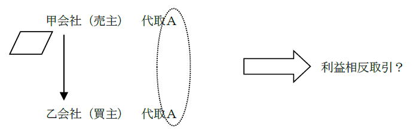
→ 両会社につき必要（昭37.6.27民甲1657）
甲会社の代表取締役がＡＢ、乙会社の代表取締役がＡである場合において、Ａが両会社を代表して、甲会社の有する土地を乙会社に売却する契約を締結する場合についても同様である。
②甲会社の代表取締役がＡＢ、乙会社の代表取締役がＡ、代表権のない取締役がＢである場合において、Ｂが甲会社をＡが乙会社をそれぞれ代表して、甲会社の有する土地を乙会社に売却する契約を締結し、売買による所有権移転登記を申請するときは、株主総会又は取締役会の承認が必要か？
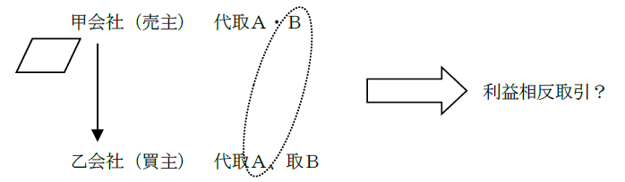
→ 両会社につき必要（根抵当権設定の事案について、登研515P.252）
自社の取締役が相手方会社を代表して取引する場合には、相手方会社の利益を図り、自社の利益を害する恐れがあるからである。
③甲会社の代表取締役がＡ、乙会社の代表取締役がＡＢである場合において、Ａが甲会社を、Ｂが乙会社をそれぞれ代表して、甲会社の有する土地を乙会社に売却する契約を締結し、売買による所有権移転登記を申請するときは、株主総会又は取締役会の承認が必要か？
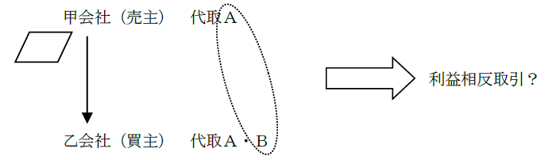
→ 乙会社につき必要（根抵当権設定の事案について、登研515P.251）
自社の取締役が相手方会社を代表して取引する場合には、相手方会社の利益を図り、自社の利益を害する恐れがあるからである。
④甲会社の代表取締役がＡＢ、乙会社の代表取締役がＡＣである場合において、Ｂが甲会社を、Ｃが乙会社を代表して、甲会社所有の不動産について、甲会社から乙会社に売り渡し、この売買を登記原因とする所有権の移転の登記を申請するときは、株主総会又は取締役会の承認が必要か？
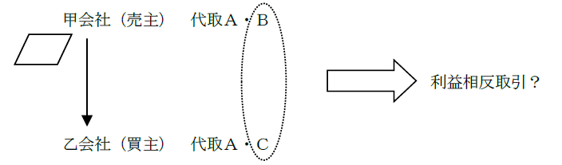
→ 両会社ともに不要（昭52.11.14民3.5691）
⑤代表取締役を同じくする甲会社と乙会社の共有名義の不動産について、共有物分割を登記原因として、甲会社の持分を乙会社に移転する持分の移転の登記を申請するときは、株主総会又は取締役会の承認が必要か？
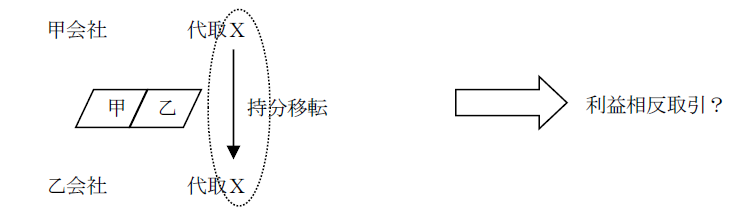
→ 両会社につき必要（登研596P.125）
自社の取締役が相手方会社を代表して取引する場合には、相手方会社の利益を図り、自社の利益を害する恐れがあるからである。
2. 担保権の設定
①会社債務の担保のために代表取締役が保証人となり、かつ会社所有の不動産について抵当権を設定する場合において、株主総会又は取締役会の承認が必要か？
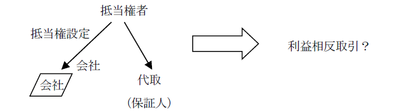
→ 不要（昭41.6.8民3.397）
代表取締役が会社債務の物上保証人となり、自己及び会社所有の各不動産に抵当権を設定する場合についても同様である。
②会社と代表取締役との連帯債務について代表取締役所有の不動産に抵当権を設定する場合において、株主総会又は取締役会の承認が必要か？
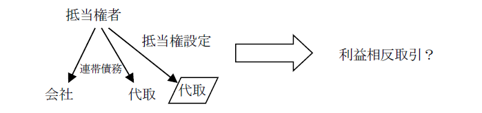
→ 不要（昭41.6.8民3.397）
③甲会社と乙会社の代表取締役が同一人物であり、甲会社の丙銀行に対する債務を担保するため、乙会社所有の不動産に抵当権を設定する登記を申請する場合には、株主総会又は取締役会の承認が必要か？
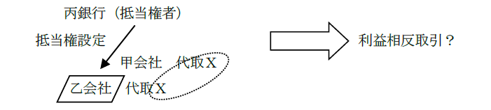
→ 乙会社につき必要（昭35.8.4民甲1929）
甲会社の債務を乙会社において物上保証させる行為は、乙会社に不利益となるおそれがあるからである。
④甲会社と乙会社の代表取締役が同一人である場合において、乙会社の取締役Ａ個人名義の不動産について、根抵当権者を甲会社、債務者を乙会社とする根抵当権の設定登記を申請するときは、株主総会又は取締役会の承認が必要か？
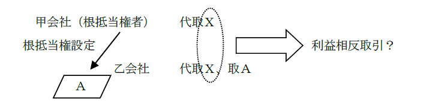
→ 不要（登研530P.147）
債務者である乙会社の取締役個人名義の不動産に根抵当権を設定することは、甲会社においても乙会社においても、利益を害するおそれがあるとはいえないからである。
3. 担保権の移転、変更
①会社債務の担保のために、会社所有の不動産について抵当権設定の登記をした後、代表取締役が債務引受けをし、債務者を代表取締役個人に変更する場合において、株主総会又は取締役会の承認が必要か？
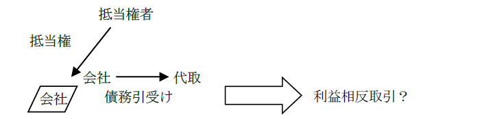
→ 不要（昭41.6.8民3.397）
会社の債務を代表取締役が引き受けたので、かえって会社にとって利益であるといえるからである。
②会社所有の不動産を目的とする根抵当権の債務者を会社から代表取締役個人に変更する場合において、株主総会又は取締役会の承認が必要か？
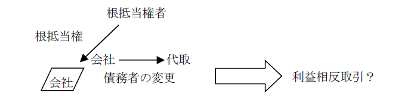
→ 必要（登研382P.82）
根抵当権の債務者を代表取締役個人に変更すると、代表取締役個人が負う債務を会社の財産をもって担保することになるからである。
③甲会社を設定者、甲会社の代表取締役Ａを債務者とする根抵当権の債務者を甲会社及びＡに変更する根抵当権の変更の登記を申請するときは、株主総会又は取締役会の承認が必要か？
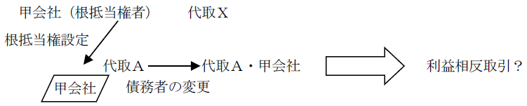
→ 不要（登研515P.252）
当該変更により、甲会社の債務が新たに担保されることとなり、甲会社に不利益とはならないからである。
④甲株式会社を債務者兼根抵当権設定者とする根抵当権の設定の登記がされている場合において、債務者を、甲株式会社と代表取締役を同じくする乙株式会社に変更することは利益相反に当たるか？
→ 当たる（登研419P.87、515P.253）。
⑤根抵当権の設定者がＡ株式会社、債務者がその代表取締役Ｂである場合、根抵当権の移転の登記の申請情報には、Ａ株式会社の承諾情報のほか、Ａ株式会社の取締役会議事録その他の利益相反行為の承認に関する情報を併せて提供しなければならない。
4. 抹消
①甲会社を抵当権設定者、甲会社と代表取締役を同じくする乙会社を抵当権者とする抵当権の設定の仮登記がされている場合において、解除を原因として当該仮登記を抹消するときは、株主総会又は取締役会の承認が必要か？
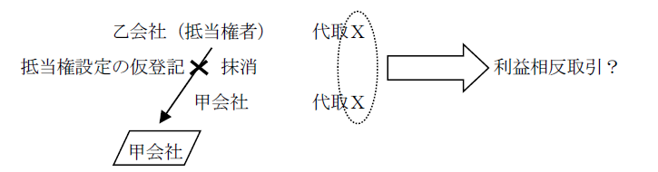
→ 乙会社につき必要（登研539P.154）
乙会社が権利を失うからである。
1. 意義
親権を行う父又は母とその親権に服する未成年の子との利益が相反する行為については、親権を行う者は、その子のために特別代理人を選任することを家庭裁判所に請求しなければならない（民法826条）。
そして、特別代理人が選任され、特別代理人が未成年者を代理して法律行為をし、その登記を申請する場合、家庭裁判所の選任審判書を提供しなければならない。
なお、利益相反行為に該当するため特別代理人を選任し、法律行為がなされた場合、その行為による物権変動に基づく登記の申請は、特別代理人、親権者、未成年者の子自身のいずれからも申請し得る（昭32.4.13民3.379）。
2. 具体的な利益相反行為の当否
①親権者とその未成年の子で共有する不動産を自己の持分とともに第三者に売却することは、利益相反行為に当たるか？
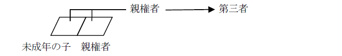
→ 利益相反行為に当たらない（昭23.11.5民甲2135）。
②親権者が、その親権に服する未成年の子が所有する建物の増築資金を借り入れるため、当該建物について親権者を債務者とする抵当権を設定し、その登記を申請することは、利益相反行為に当たるか？
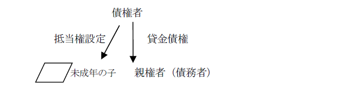
→ 利益相反行為に当たる（最判昭37.10.2）。
③他人の債務を担保するために親権者と未成年の子が共有する不動産に抵当権を設定することは、利益相反行為に当たるか？
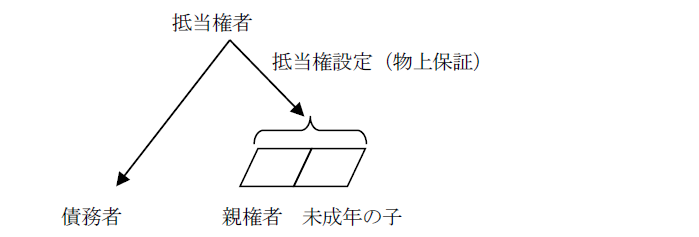
→ 利益相反行為に当たらない（昭37.10.9民甲2819）。
④親権者が代表取締役である会社の債務を担保するために、親権に服する未成年の子の所有する不動産に抵当権を設定することは、利益相反行為に当たるか？
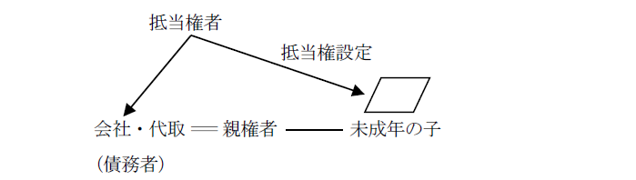
→ 利益相反行為に当たらない（昭36.5.10民甲1042）。
親権者が代表取締役である会社と親権者は、別人格であるからである。
⑤親権者が、その親権に服する未成年の子に対し、親権者を債務者とする抵当権設定の登記がされている親権者所有の不動産を贈与することは、利益相反行為に当たるか？
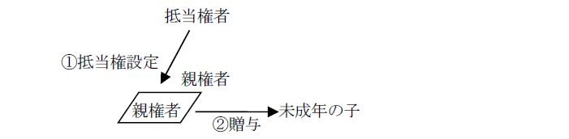
→ 利益相反行為に当たらない（登研420P.121）。
受贈者である子にとって、不利益な行為ではないからである。
⑥親権者が他人の債務の連帯保証人になるとともに、当該他人の債務を担保するために、未成年の子の所有する不動産に抵当権を設定することは、利益相反行為に当たるか？
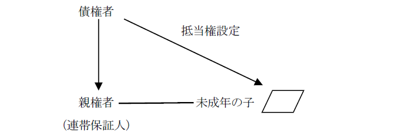
→ 利益相反行為に当たる（昭33.4.4民甲715、登研517P.195）。
⑦親権者と未成年の子の連帯債務を担保するために、未成年の子の所有する不動産に抵当権を設定することは、利益相反行為に当たるか？
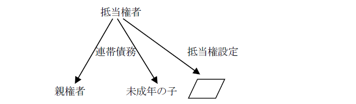
→ 利益相反行為に当たる（昭33.4.4民甲714）。
親権者の債務を子の不動産で担保することになるからである。
⑧元本の確定前に債務者が死亡し、未成年の子とその親権者が相続人となり、当該不動産は子が相続した場合において、親権者を民法398条の8第2項の合意による債務者と定め、その登記を申請するには、その子のために特別代理人を選任しなければならない（登研304P.73）。
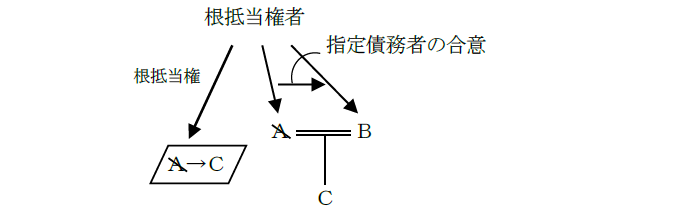
cf. 根抵当権の債務者兼設定者の相続人が親権者及び未成年の子である場合において、未成年の子を指定債務者とする合意をすることは、未成年の子が負担する債務を、親権者又は未成年の子自身の不動産で担保するに過ぎないため、利益相反行為には該当せず、特別代理人を選任しないで未成年の子に代わって親権者が合意し、その登記を申請することができる。
⑨親権者Ｄを債務者、その未成年の子Ｃを根抵当権設定者とする根抵当権の全部譲渡は、利益相反行為に当たるか？
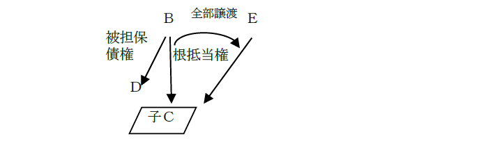
→譲受人とＤの間に生じた債権を新たにＣが担保することになるので、利益相反行為に当たる。そのため、親権者Ｄは、その子Ｃのために特別代理人を選任することを家庭裁判所に請求しなければならない（民法826条1項）。そして、親権者の一方Ｄとその子Ｃとの利益相反行為となる場合には、利益相反行為にならない他の親権者Ｅと特別代理人とが共同してＣを代理して、根抵当権の全部譲渡についての設定者の承諾をする（民法398条の12第1項、昭33.10.16民甲2128、最判昭35.2.25）。
第４節 登記上の利害関係を有する第三者の承諾を証する情報
登記上の利害関係を有する第三者とは、登記記録上、申請された登記が実行されることにより、不利益を受けるおそれがある者をいう。不動産登記法は、登記の申請に際して、登記上の利害関係を有する第三者の承諾を証する情報の提供を要すると規定することにより、これらの者を保護しようとしている。
以下の場合に、登記上の利害関係を有する第三者の承諾を証する情報の提供が必要とされる。
① 抹消の登記（68条、不登令別表26添付情報ヘ）
② 変更・更正の登記（66条、68条、不登令別表25添付情報ロ、26添付情報ヘ）
③ 抹消回復の登記（72条、不登令別表27添付情報ロ）
④ 所有権の仮登記に基づく本登記（109条1項、不登令別表69添付情報イ）
1. 抹消の登記（上記①）
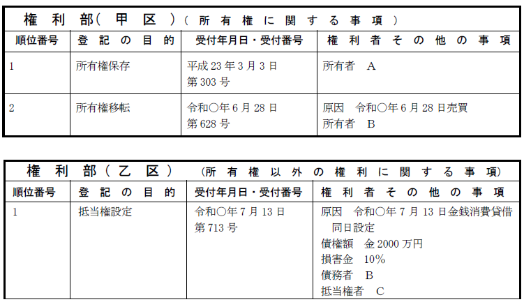
登記上の利害関係を有する第三者がある場合には、当該第三者の承諾があるときに限り、抹消の登記を申請することができる（68条）。
2. 変更・更正の登記（上記②）
(1) 原則
権利の変更の登記又は更正の登記は、登記上の利害関係を有する第三者の承諾がある場合及び当該第三者がない場合に限り、付記登記によってすることができる（66条）。
→ 承諾が得られない場合には、主登記でする。
(2) 例外
根抵当権の極度額の変更登記は、後順位抵当権者等の実体法上の利害関係人の承諾を要し（民法398条の5）、承諾書を添付しない場合、登記自体、することができない（昭46.10.4民甲3230）。
→ 利害関係人の承諾があれば、常に付記登記でなされる（昭46.10.4民甲3230）。
(3) 所有権の更正登記で一部抹消の実質を有する場合
登記上の利害関係を有する第三者がある場合には、当該第三者の承諾があるときに限り、申請することができる（68条）。
3. 抹消回復の登記（上記③）
抹消された登記（権利に関する登記に限る。）の回復は、登記上の利害関係を有する第三者（当該登記の回復につき利害関係を有する抵当証券の所持人又は裏書人を含む。）がある場合には、当該第三者の承諾があるときに限り、申請することができる（72条）。
4. 所有権の仮登記に基づく本登記（上記④）
所有権に関する仮登記に基づく本登記は、登記上の利害関係を有する第三者（本登記につき利害関係を有する抵当証券の所持人又は裏書人を含む。）がある場合には、当該第三者の承諾があるときに限り、申請することができる（109条1項）。
第５節 登記原因証明情報
登記の原因となる権利変動を内容とする情報である。
権利に関する登記を申請する場合には、原則として、登記原因を証する情報を提供しなければならない（61条）。
1. 内容
登記原因証明情報の内容としては、登記原因である法律行為・事実を説明する内容と解されている。
2. 登記申請の可否等
①申請情報に併せて提供された印鑑証明書に係る印鑑と別の印鑑で押印された抵当権設定契約書を登記原因証明情報として提供して、抵当権設定登記を申請することができる（大9.3.18民931）。
登記原因証明情報については、登記義務者が記名押印し印鑑証明書を提供する必要はないため（認印でよい）、申請情報（又は委任状）と別の印鑑で押印しても問題ない。
②停止条件付法律行為を原因として登記を申請する場合、当該契約の契約証書だけでなく、停止条件が成就したことを証する情報も提供する必要がある。
停止条件付法律行為は、停止条件が成就した時からその効力を生ずるからである（民法127条1項）。
③元本確定後の根抵当権の登記について会社分割を登記原因として根抵当権の移転の登記を申請する場合、登記原因証明情報として、承継会社の登記事項証明書の他、吸収分割の場合は分割契約書、新設分割の場合は分割計画書の提供が必要となる。
④相続人の戸籍謄本に記載されている本籍と遺産分割協議書に記載されている住所が異なる場合でも、戸籍謄本における氏名及び生年月日が、遺産分割協議書に併せて提供される印鑑証明書における記載と同一であり、相続人の同一性が確認される限り、他に住民票の写し等を提供する必要はない（昭43.3.28民3.114）。
①所有権保存の登記（74条2項における敷地権付き区分建物の所有権保存登記を申請する場合を除く。）（不登令7条3項1号）
②処分禁止の登記に後れる登記の抹消（不登令7条3項2号～4号）
③混同を原因とする権利に関する登記の抹消を申請する場合で、登記記録上、混同によって権利が消滅したことが明らかであるとき（登研690P.221）
④私人の住所変更登記又は住所更正登記において住民基本台帳法に規定する住民票コードを提供した場合（不登令9条、不登規36条4項）
⑤法人の住所変更登記又は住所更正登記において会社法人等番号を提供した場合（不登令9条、不登規36条4項）
第６節 代理権限証明情報
代理人により登記の申請をする場合には、その申請権限を証するため、代理権限証明情報（ex.当事者から代理人である司法書士への委任状）を、申請情報と併せて提供しなければならないのが原則である（不登令7条1項2号）。
1. 原則
司法書士への委任による代理申請の場合、代理権限証明情報は委任状である。
2. 例外
①不動産に関する国の機関の所管に属する権利について命令又は規則により指定された官庁又は公署の職員が登記の嘱託をする場合には、代表者の資格を証する情報及び代理人の権限を証する情報の提供を要しない（不登令7条2項）。
官公署の所管に属する権利について、命令又は規則によって指定された職員であることから、その確認が登記官にとって容易であるからである。
②登記申請の委任後に法人の代表者が退任し、既に退任の登記がされている場合において、登記申請の委任当時の代表者の権限を証する情報として閉鎖事項証明書を提供するときは、作成後3か月を超えていても、差し支えないとされる（平6.1.14民3.366）。
委任当時の代表者が、その当時に代表権を有していたことを証明するために閉鎖登記簿謄本を提供する場合、過去の代表権を証するものとして添付されるところ、閉鎖登記簿の登記事項は変わることがないのであるから、これを作成後3か月以内に限る必要はないものとの取扱いが認められている。
③所有権移転の登記の登記義務者が、フランス共和国在住の日本人であり、数か月前から一時帰国中であるが住民登録をしていない場合、同人の代理人は、本人が署名した委任状並びにフランス共和国公証人の署名証明書及び訳文を記載した書面を申請書に添付して、書面を提出する方法による登記の申請をすることができる。この訳文の翻訳者は、登記申請代理人（ex.司法書士）でもよい（昭40.6.18民甲1096）。
法定代理人が登記権利者又は登記義務者を代理して申請する場合には、例えば、以下のような代理権限証明情報を提供しなければならない。
①親権者又は未成年後見人の権限を証する代理権限証明情報（昭22.6.23民甲560）
→ 戸籍謄本（戸籍全部事項証明書）
②成年後見人の代理権限証明情報
→ 成年後見人の権限を証する後見登記の登記事項証明書（不登令7条1項2号、後見登記等に関する法律10条）
平成12年4月1日以降、公示方法が戸籍への記載から後見登記等ファイルへの登記に変更されたことにより、後見登記等ファイル（後見登記等に関する法律4条）に記録された事項を証明した書面は、当該登記事項証明書に該当する。
③登記された支配人が法人を代理して申請する場合の代理権限証明情報
→会社法人等番号（不登令7条1項1号ロ）
会社法人等番号ではなく、作成後3か月以内の登記事項証明書を提供することもできる（不登令7条1項1号かっこ書、不登規36条1項2号、2項）。
④不在者の財産管理人の権限を証する代理権限証明情報
→ 不在者の財産管理人の選任審判書
※なお、代理権限証明情報が書面で作成されており、市町村長、登記官その他の公務員が職務上作成したものは、官庁又は公署が登記の嘱託をする場合を除き、作成後3か月以内のものでなければならない（不登令17条1項）。